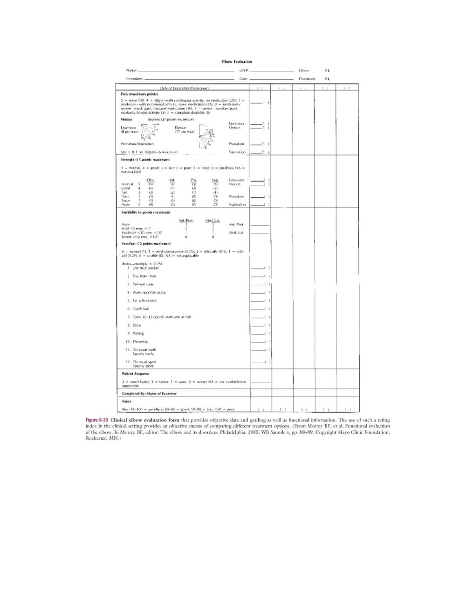
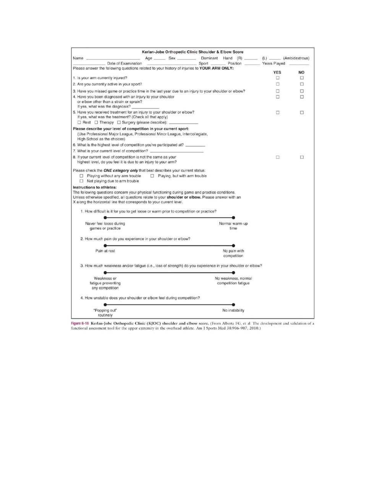

Screening of Elbow
Faithful study notes transcribed from the Paper 3 MSK assessment compilation (based on David J. Magee, Orthopedic Physical Assessment, 6th ed., and companion material).
PAPER 3 SCREENING OF ELBOW
CONTENTS : 1. Patient history 2. Observation 3. Examination 4. Palpation 5. Diagnostic Imaging 6. References
Patient History
1. How old is the patient? 2. What was the mechanism of injury 3. How long has the patient had the problem? 4. 4. What are the details of the present pain and other symptoms? 5. 5. Are there any activities that increase or decrease the pain? 6. 6. Are there any positions that relieve the pain? Patients often protectively hold the elbow to the side (in the resting position) and hold the wrist for support, especially in acute conditions. 7. 7. Is there any indication of deformity, bruising (Figure 6-6), wasting, or muscle spasm? 8. 8. Are any movements impaired? 9. 9. What is the patient unable to do functionally? Which hand is dominant? 10.What is the patient's usual activity or pastime?
Have any of these activities been altered or increased in the past month? 11.11. Does the patient complain of any abnormal nerve distribution pain? 12.Does the patient have a history of previous overuse injury or trauma? Observation : The patient must be suitably undressed so that both arms are exposed to allow the examiner to compare the two sides. If the history indicates an insidious onset of elbow problems, the examiner should take the time to observe full body posture, especially the neck and shoulder areas, for possible referral of symptoms. In males, the normal carrying angle is 5° to 10°; in females, it is 10° to 15°.
If the carrying angle is more than 15°, it is called cubitus valgus; if it is less than 5° to 10°, it is called cubitus varus If there has been a fracture or epiphyseal injury to the distal humerus and a cubitus varus results, a gun stock deformity may occur in full extension . If swelling exists, all three joints of the elbow complex are affected because they have a common capsule. The examiner should look for normal bony and softtissue contours anteriorly and posteriorly. Often, athletes (such as, pitchers, other throwers, and rodeo riders) have a much larger forearm because of muscle and bone hypertrophy on the dominant side. The examiner should note whether the patient can assume the normal position of function of the elbow.
A normal functional position is 90° of flexion with the forearm midway between supination and pronation.9 The forearm may also be considered to be in a functional position when slightly pronated, as in writing. From this position, forward flexion of the shoulder along with slightly more elbow flexion (up to 120°) enables the person to bring food to the mouth; supination of the forearm decreases the amount of shoulder flexion necessary to accomplish this olecranon process of the ulna and the medial and lateral epicondyles of the humerus normally form an isosceles triangle. When the arm is fully extended, the three points normally form a straight line.The isosceles triangle is sometimes called the triangle sign.
If there is a fracture, dislocation, or degeneration leading to loss of bone or cartilage, the distance between the apex and the base decreases and the isosceles triangle no longer exists. The triangle can be measured on x-ray films.
EXAMINATION
Active Movements
Active Movements of the Elbow Complex • Flexion of the elbow (140° to 150°) • Extension of the elbow (0° to 10°) • Supination of the forearm (90°) • Pronation of the forearm (80° to 90°) • Combined movements (if necessary) • Repetitive movements (if necessary) • Sustained positions (if necessary) When the arm is fully extended, the three points normally form a straight line.10 The isosceles triangle sign. Active elbow extension is 0°, although up to a 10° hyperextension may be exhibited, especially in women. This hyperextension is considered normal if it is equal on both sides and there is no history of trauma. Normally, the movement is arrested by the locking of the olecranon process of the ulna into the olecranon fossa of the humerus. In some cases, under violent compressive loads (e.g., gymnastics, weight lifting), the olecranon process may act as a pivot, resulting in posterior dislocation of the elbow. This mechanism of injury is more likely to occur in someone with elbows that normally hyperextended. Active supination should be 90° so that the palm faces up. The examiner should ensure that the shoulder is not adducted further in an attempt to give the appearance of increased supination or to compensate for a lack of sufficient supination.
Passive Movement
Passive Movements of the Elbow Complex and Normal End Feel • Elbow flexion (tissue approximation) • Elbow extension (bone-to-bone) • Forearm supination (tissue stretch) • Forearm pronation (tissue stretch If the ROM is full on active movements, overpressure may be gently applied to test the end feel in each direction. If the movement is not full, passive movements should be carried out carefully to test the end feel and to test for a capsular pattern. , in thin patients the end feel may be bone to bone as a result of the coronoid process hitting in the coronoid fossa. Likewise, in thin individuals, pronation may be bone to bone. In addition to the end feel tests during passive movements, the examiner should note whether a capsular pattern is present. The capsular pattern for the elbow complex as a whole is more limitation of flexion than extension. the examiner may want to determine whether muscles crossing the elbow are tight. If the muscles are tight, the end feel will be a muscle stretch, and ROM at one of the joints that the muscle passes over will be restricted . Testing length of tight muscles. A, Biceps. B, Triceps. C, Long wrist extensors. D, Long wrist flexors.
Resisted Isometric Movement
For proper testing of the muscles of the elbow complex, the movement must be resisted and isometric. Muscle flexion power around the elbow is greatest in the range of 90° to 110° with the forearm supinated. At 45° and 135°, flexion power is only 75% of maximum.9 Isometrically, research shows that men are two times stronger than women at the elbow; extension is 60% of flexion, and pronation is about 85% of supination. To perform the resisted isometric tests, the patient is seated. Positioning for resisted isometric movements. A, Elbow extension. B, Elbow flexion. C, Forearm supination. D, Forearm pronation. E, Wrist flexion. F, Wrist extension.
Functional Assessment
When assessing the elbow, it is important to remember that the elbow is the middle portion of an integral upper limb kinetic chain. It allows the hand to be positioned in space, helps stabilize the upper extremity for power and detailed work activities, and provides power to the arm for lifting activities.15 Motion in the elbow allows the hand to be positioned so that daily functions can be performed easily. Thus, functionally, the elbow is often one part of a functional assessment that may also involve the shoulder and/or hand.
Special Test
For ligamentous instability: Ligamentous valgus instability test Ligamentous varus instability test Moving valgus stress test • For biceps rupture (third-degree strain): Popeye sign (proximal long head of biceps) • For lateral epicondylitis (epicondylalgia): Cozen's test Mill's test • For neurological dysfunction: Elbow flexion test (ulnar nerve) Pinch grip test (anterior interosseous branch of median nerve) Reflexes and Cutaneous Distribution The reflexes around the elbow that are often checked include the biceps (C5- C6), brachioradialis (C5-C6), and triceps (C7-C8). The examiner should also assess the dermatomes around the elbow and the cutaneous distribution of the various nerves, noting any difference. Peripheral Nerve Injuries About the Elbow
Median Nerve (C6-C8, T1)
In the elbow region, the median nerve proper can be injured by trauma (e.g., lacerations, fractures, dislocations), by systemic disease, and especially by compression and/or traction. The median nerve may also be pinched or compressed above the elbow as it passes under the ligament of Struthers, an anomalous structure found in approximately 1% of the population . The ligament runs from an abnormal spur on the shaft of the humerus to the medial epicondyle of the humerus. Because the brachial artery sometimes accompanies the nerve through this tunnel, it may also be compressed, resulting in possible vascular as well as neurological symptoms.
In this case, the neurological involvement would include weakness of the pronator teres muscle and of those muscles affected by the pronator syndrome (see later discussion). The condition may also be called the humerus supracondylar process syndrome. Pressure in the ligament of Struthers area leads to motor loss and sensory loss of the median nerve. Initially, the patient complains of pain and paresthesia in the elbow and forearm; abnormality of motor function is secondary. With time, however, motor function is also affected, with wrist and finger flexion as well as thumb movements being most affected.
A second area of compression of the median nerve as it passes through the elbow occurs where it passes through the two heads of pronator teres (pronator syndrome). In this case, the pronator teres remains normal, but the other muscles supplied by the median nerve (see Table 6-2) are affected, as is its sensory distribution. Pronation is possible, but weakness is evident as pronation is loaded. Resisted pronation with elbow and wrist flexion for 30 to 60 seconds • Resisted elbow flexion and supination • Resisted long finger flexion at the proximal interphalangeal joint • Direct pressure over the proximal aspect of pronator teres during pronation It is interesting to note that one of the tests is similar to Mill's test for lateral epicondylitis.
The results should be compared with the good side, and production of the patient's symptoms is considered a positive test.
Anterior Interosseous Nerve
The anterior interosseous nerve, which is a branch of the median nerve, is sometimes pinched or entrapped as it passes between the two heads of the pronator teres muscle, leading to pain and functional impairment of the flexor pollicis longus, the lateral half of the flexor digitorum profundus, and the pronator quadratus muscles. The condition is called anterior interosseous nerve syndrome is characterized by a pinch deformity. The deformity results from the paralysis of the flexors of the index finger and thumb. This leads to extension of the distal interphalangeal joint of the index finger and the interphalangeal joint of the thumb. The resulting pinch is pulp to pulp rather than tip to tip. It has been reported that the nerve may also be injured with a forearm fracture . With anterior interosseous syndrome, there is no sensory loss, because the anterior interosseous nerve is a motor nerve; signs and symptoms of the condition are related to motor function.
Ulnar Nerve (C7-C8, T1)
In the elbow region, the ulnar nerve is most likely to be injured, compressed, or stretched in the cubital tunnel .In fact, it is a common entrapment neuropathy, second only to carpal tunnel syndrome. The ulnar nerve may be injured or compressed as a result of swelling (e.g., trauma, pregnancy), osteophytes, arthritic diseases, trauma, or repeated microtrauma. In fact, it is a common entrapment neuropathy, second only to carpal tunnel syndrome. The ulnar nerve may be injured or compressed as a result of swelling (e.g., trauma, pregnancy), osteophytes, arthritic diseases, trauma, or repeated microtrauma.
Compression is altered as the elbow moves from extension (decreased) to flexion (increased), causing traction on the nerve, and is further enhanced if a significant cubitus valgus is present.53,54 Symptoms therefore are more likely to occur when the elbow is flexed. It is usually in the cubital tunnel area that the ulnar nerve is affected, leading to tardy ulnar palsy. If the problem is the result of restriction in the cubital tunnel, direct pressure over the tunnel may reproduce or exacerbate the symptoms Tardy ulnar palsy implies that the symptoms of nerve injury come on long after the patient has been injured; this delayed reaction seems to be unique to the ulnar nerve.
Although most common in adults, it has been reported in children, and in children the delay has been up to 29 months.55 In adults, the possibility of a double crush injury (at cervical spine and elbow) should always be considered. Injury to the ulnar nerve in the cubital tunnel affects the flexor carpi ulnaris and the ulnar half of the flexor digitorum profundus in the forearm, the hypothenar eminence in the hand (flexor digiti minimi, abductor digiti minimi, opponens digiti minimi, and adductor pollicis), the interossei, and the third and fourth lumbrical muscles (see Table 6-2).
Commonly, patients cannot fully adduct the little finger and hold the finger abducted and extended, because the denervated palmar interosseous muscle cannot oppose the abductor digiti minimi .
Radial Nerve (C5-C8, T1)
The radial nerve may be injured near the elbow if there is a fracture of the shaft of the humerus. The nerve may be damaged as it winds around behind the humerus in the radial groove. Injury may occur at the time of the fracture, or the nerve may get caught in the callus of fracture healing. Because the radial nerve supplies all of the extensor muscles of the arm, only the triceps is spared with this type of injury, and even it may show some weakness. The major branch of the radial nerve in the forearm is the posterior interosseous nerve, which is given off in front of the lateral epicondyle of the humerus.
This branch may compress as it passes between the two heads of the supinator in the arcade or canal of Frohse, a fibrous arch in the supinator muscle occurring in 30% of the population . Compression can lead to functional involvement of the forearm extensor muscles and functional wrist drop, and so the patient has difficulty or is unable to stabilize the wrist for proper hand function. Diagnosis of this condition is often delayed because there is no sensory deficit. Direct pressure over the supinator muscle while resisting supination may elicit weakness of supination or tenderness.
The major branch of the radial nerve in the forearm is the posterior interosseous nerve, which is given off in front of the lateral epicondyle of the humerus.This branch may compress as it passes between the two heads of the supinator in the arcade or canal of Frohse, a fibrous arch in the supinator muscle occurring in 30% of the population.Compression can lead to functional involvement of the forearm extensor muscles and functional wrist drop, and so the patient has difficulty or is unable to stabilize the wrist for proper hand function. Diagnosis of this condition is often delayed because there is no sensory deficit. Direct pressure over the supinator muscle while resisting supination may elicit weakness of supination or tenderness.
of extensor carpi radialis brevis and its fascia, and at the distal border of supinator. This condition, sometimes called radial tunnel syndrome, may mimic tennis elbow. If the patient has a persistent form of tennis elbow, a possible nerve lesion or cervical problem should be considered. A third area of pathology is compression of the supererficial branch of the radial nerve as it passes under the tendon of the brachioradialis. This branch is sensory only, and the patient complains primarily of nocturnal pain along the dorsum of the wrist, thumb, and web space. Trauma, a tight cast, any swelling in the area, or forearm pronation with wrist flexion and ulnar deviation may cause the compression and produce paresthesia.
Direct pressure at the junction of extensor carpi radialis longus and brachioradialis may also reproduce the paresthesia or numbness. The condition is referred to as cheiralgia paresthetica or Wartenberg disease/sign.
Joint Play Movement
Joint Play Movements of the Elbow Complex • Radial deviation of the ulna and radius on the humerus • Ulnar deviation of the ulna and radius on the humerus • Distraction of the olecranon from the humerus in 90° of flexion • Anteroposterior glide of the radius on the humerus
Palpation
Palpation around the elbow. A, Olecranon fossa. B, Posterolateral aspect of the elbow. C, Posteromedial aspect of the elbow.
Anterior Aspect
Cubital Fossa
Coronoid Process and Head of Radius.
Medial Aspect
Medial Epicondyle.
Medial (Ulnar) Collateral Ligament
Ulnar Nerve.
Lateral Aspect
Lateral Epicondyle
Lateral (Radial) Collateral Ligament. Annular Ligament.
Posterior Aspect
Olecranon Process and Olecranon Bursa. Triceps Muscle.
Diagnostic Imaging
Plain Film Radiography
Common X-Ray Views of the Elbow (Depending on Pathology) • Anteroposterior view • Lateral view at 90° flexion • Cubital tunnel view • Anteroposterior internal oblique view • Anteroposterior external oblique view (trauma)
Arthrography
the views seen in normal elbow arthrograms. With the advent of magnetic resonance imaging (MRI), this technique is seldom used today.
Magnetic Resonance
Imaging MRI is used to differentiate bone and soft tissues. Because of its high soft-tissue contrast, MRI, a noninvasive technique is able to discriminate among bone marrow, cartilage, tendons, nerves, and vessels without the use of a contrast medium. The technique is used to demonstrate tendon ruptures, collateral ligament ruptures, cubital tunnel pathology, epicondylitis, and osteochondritis dissecans.
Xerography
Can illustrate the detailed borders of the various structures around the elbow
References
David J. magee : orthopedic physical assessment 6th edition .
Source pages (figures, tables & slides)
These pages of the original document carry no extractable text (presentation slides, figures, tables or handwritten notes). They are reproduced here as images so no source content is lost.

